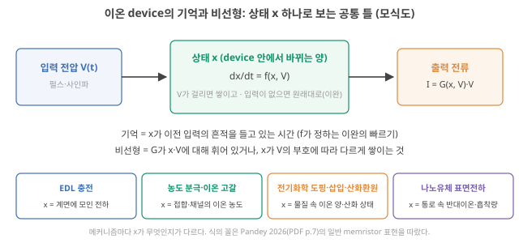
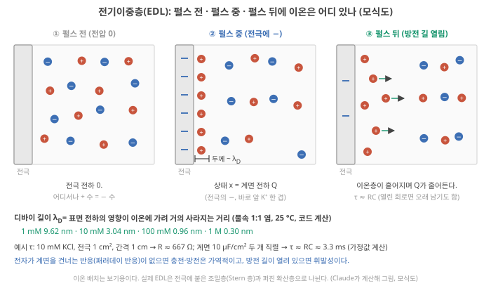
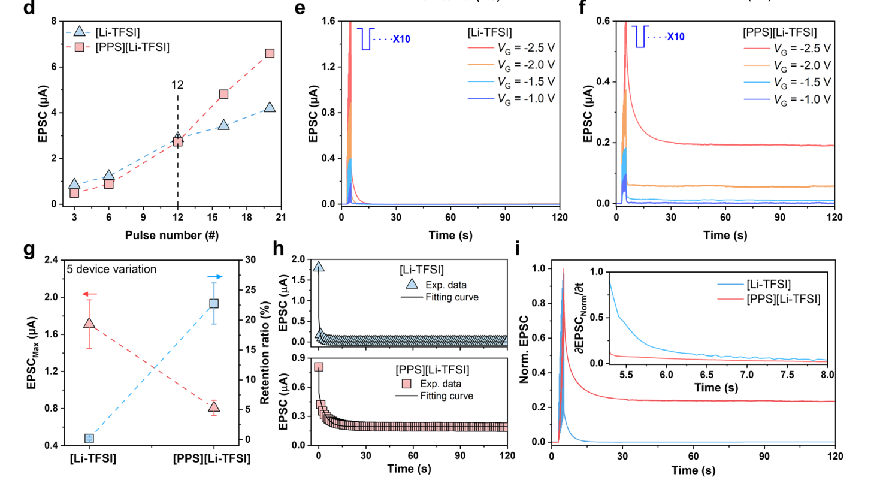
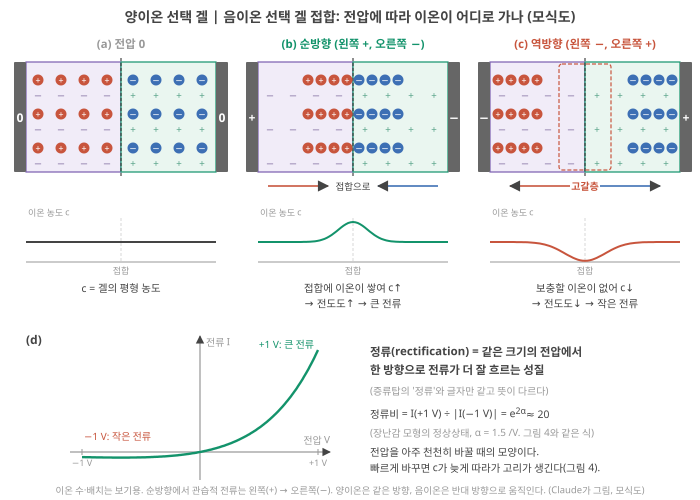
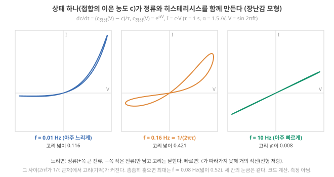
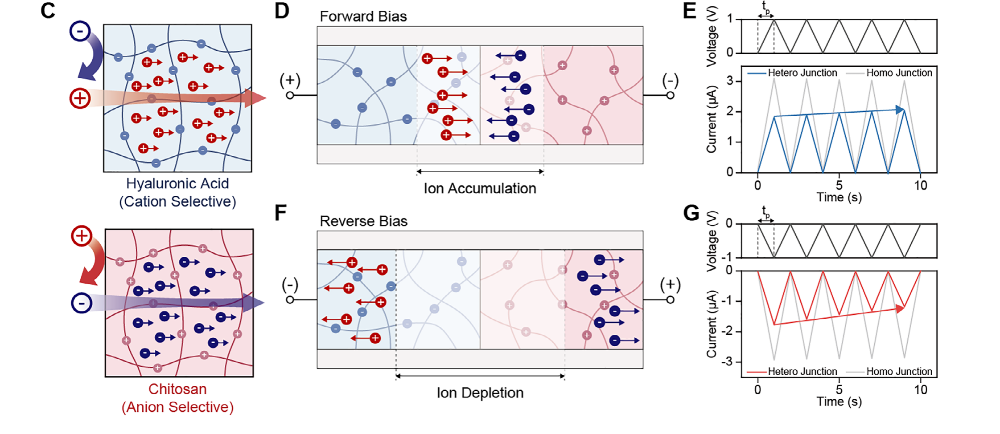

Day 37. EDL 충전과 농도 분극: 이온 device의 기억과 비선형 (1)
Phase 4 · 왜 이온성 고분자인가
이번 질문 전기이중층 충전과 농도 분극은 어떤 기억과 비선형을 만드나?
왜 배우나 내 I–V 고리·정류의 원인인 상태 x가 무엇인지 말한다.
오늘의 장면 전압 V(t) → 계면 EDL 또는 접합 축적·고갈 → 상태 x 쌓임·이완 → I = G(x, V)·V: 정류·고리
오늘 반드시 기억 = 입력이 바꾼 x가 남는 시간(τ), 비선형 = 출력이 x와 V에 기대는 방식. EDL은 τ ≈ RC로 빨리 잊는다.
나중에 봐도 됨 Gouy–Chapman 곡선 · 교과서 용어 대응 · 역방향 전류 바닥 계산
넘어가는 기준 '오늘 반드시'를 내 말로 말할 수 있으면 충분합니다.
이후 쓰이는 곳 Day 39–40 Debye length·EDL 충전 시간 · Day 45–46 정류 접합 이점 · Day 49–50 계면 충전 비용 · Day 51–52 전극 이중층
지난 학습 복습
지난 학습 단위(Day 36 · 이온만의 자유도와 이온이 지는 영역)의 핵심을 다른 예로 확인합니다. 고르는 즉시 맞았는지와 이유가 보입니다. 틀려도 아래 학습자료는 그대로 열려 있고, 틀린 문제에는 다시 볼 곳이 붙습니다.
사전 테스트 (선택)
사전 테스트 펼치기 · 배우기 전에 짐작해 보는 문제 (선택)
학습자료
Day 35–36에서는 이온에 전자에 없는 상태변수(device 안에서 입력에 따라 바뀌고, 바뀐 채로 얼마간 남아 다음 응답에 영향을 주는 양, Day 36 3구간)가 있다는 데까지 왔습니다. 이번에는 그 상태변수가 device 안에서 구체적으로 무엇이고, 거기서 reservoir computing(입력의 흔적을 device의 내부 상태에 담고 readout만 학습하는 계산, Day 12 4구간)이 필요로 하는 두 재료, 기억과 비선형이 어떻게 나오는지를 봅니다. Phase 2에서 이 두 재료가 무엇인지는 수학으로 봤습니다(Day 15 기초: fading memory, Day 17 기초: 비선형). 이번에는 그것을 이온 물리의 언어로 다시 씁니다.
이온 device의 기억과 비선형을 만드는 메커니즘은 여럿이고, 한 device 안에서 섞입니다. 이해를 위해 넷으로 나눕니다(서로 겹치는 분류입니다).
이 주제의 질문 순서 — 이번 Day 37에서는 구간 1–3만 읽습니다. 나머지는 Day 38에서 이어집니다(구간 번호는 원래 한 묶음이던 순서 그대로입니다).
- 이온 device에서 '기억'과 '비선형'은 정확히 무엇이 바뀌고 남는 것인가? → 구간 1
- 전기이중층(EDL) 충전: 여기서 다루는 메커니즘 가운데 대개 가장 빨리 잊는 기억은 어떻게 생기나? → 구간 2
- 농도 분극과 이온 고갈: 접합에서 이온이 빠져나가면 왜 정류와 기억이 함께 생기나? (내 polyelectrolyte heterojunction의 물리) → 구간 3
- 전기화학 도핑·삽입·산화환원(그리고 침전): 이온이 물질 안으로 들어가면 무엇이 달라지나? (Day 38에서)
- 나노유체 표면전하: 채널이 디바이 길이만큼 좁아지면 무엇이 달라지나? (Day 38에서)
- 메커니즘마다 휘발성·시간상수·가역성은 어떻게 다르고, 연구는 어디까지 왔으며 무엇이 남았나? (Day 38에서)
작은 예 하나를 끝까지 씁니다. 25 °C의 10 mM KCl 소금물(1 L에 KCl 0.01 mol)입니다. 같은 소금물이 2구간에서는 EDL 두께 3.0 nm와 충전 시간 3.3 ms, 3구간에서는 고정 전하 겔 속 Cl⁻ 0.1 mM, 5구간에서는 '11 nm 채널은 디바이 길이의 3.6배'라는 숫자로 이어집니다.
1. 기억과 비선형은 '무엇이 바뀌고 남는가'의 문제다
이 구간을 읽고 나면 이온 device의 기억과 비선형을 "상태 x가 쌓이고 이완하는 방식"과 "출력이 x와 전압에 기대는 방식"으로 나눠 말하고, 메커니즘마다 기록할 세 가지 성질(휘발성·시간상수·가역성)이 무엇인지 안다.
상황. 내 접합에 전압 펄스를 준 뒤 전류가 서서히 줄고, 전압을 껐는데도 한동안 흔적이 남는다고 합시다. reservoir computing 논문은 이것을 '기억'과 '비선형'이라 부르는데, device 안에서 정확히 무엇이 바뀌고 남은 것인지 말해야 그 말을 믿을 수 있습니다. 이 구간은 그 답의 공통 틀(상태 \(x\))을 만들고, 이후 구간에서 메커니즘마다 \(x\)가 무엇인지 채웁니다.
Phase 2의 두 단어를 먼저 다시 꺼냅니다. fading memory는 지금 상태에 과거 입력의 영향이 남되 오래된 것일수록 약해지는 성질이었고, 비선형은 입력을 두 배로 했을 때 출력이 두 배가 되지 않는 것(superposition principle이 깨지는 것)이었습니다. reservoir computing은 둘 다 필요하고, 둘은 서로 자원을 나눠 쓰는 관계였습니다(Day 20 기초: 상충).
이온 device에서 이 두 성질은 어디서 오나? 답의 뼈대는 하나입니다. device 안에 입력에 따라 바뀌고, 바뀐 채로 얼마간 남는 양이 있습니다. 이것을 상태 \(x\)라고 부르겠습니다(Day 36 3구간의 '상태변수'). 작은 장면 하나로 봅니다. 전극 앞에 이온이 모이는 device(2구간의 EDL)라면 \(x\)는 모인 이온의 전하량입니다. 전압 펄스를 주면 \(x\)가 쌓이고, 펄스를 끄면 \(x\)가 원래 값(0)으로 돌아갑니다. 입력이 없을 때 원래 값으로 돌아가는 이 과정을 이완(relaxation)이라 합니다. 이완이 끝나기 전에 다음 펄스가 오면 \(x\)에는 앞 펄스의 흔적이 남아 있습니다. 이것이 기억입니다. Day 23–24의 노드 식 \(x_{\text{새}} = d\,x_{\text{이전}} + (1-d)\,u\)에서 상태 \(x\)가 하던 일과 같습니다(Day 23 2구간). 다른 점은 여기서 \(x\)가 계산 속 숫자가 아니라 실제 이온의 양이라는 것입니다.
그림 1을 먼저 봅니다. 왼쪽이 입력(전압), 가운데가 상태 \(x\), 오른쪽이 출력(전류)이고, 아래 줄 네 칸이 Day 37–38의 네 메커니즘에서 \(x\)가 무엇인지입니다.

그림 가운데와 오른쪽의 두 식을 기호부터 읽습니다. \(\dot{x}\)(글자 위의 점 하나)는 \(dx/dt\), 곧 "\(x\)가 1초에 얼마나 바뀌나"(시간에 대한 변화율)입니다. \(\dot{x} = f(x, V)\)는 "\(x\)가 바뀌는 빠르기는 지금의 \(x\)와 걸린 전압 \(V\)로 정해진다"는 뜻이고, \(i = G(x, V)\,V\)는 "전류는 conductance × 전압인데, 그 conductance \(G\)가 상태 \(x\)(와 전압)에 따라 달라진다"는 뜻입니다. 이 두 식은 나노유체 memristor 리뷰인 Pandey 2026이 일반 memristor(멤리스터: 지나간 전압·전류의 이력에 따라 저항이 바뀌고 그 값이 얼마간 남는 2단자 device)를 적는 방식입니다. 같은 글은 이 \(x\)의 동역학이 히스테리시스 고리(전압을 올릴 때와 내릴 때 전류가 서로 다른 길을 지나 I–V 그래프에 생기는 고리)의 넓이·방향·휘발성을 정한다고 씁니다. Pandey 2026, p.7
이 틀로 보면 Day 37–38의 네 메커니즘은 "\(x\)가 무엇이냐"의 차이입니다(그림 1 아래 줄). EDL에서는 계면에 모인 전하, 농도 분극에서는 접합이나 채널의 이온 농도, 전기화학 도핑에서는 고분자·결정 속으로 들어간 이온의 양(과 그에 따른 전자적 전하), 나노유체에서는 좁은 채널 속 반대이온의 농도나 벽에 붙은 이온의 양입니다.
메커니즘마다 기록할 세 가지. 6구간의 표를 채우기 위해 용어를 정해 둡니다.
- 휘발성(volatility): 입력을 끊었을 때 \(x\)가 스스로 원래대로 돌아가는가. 저절로 돌아가면 휘발성, 거의 남아 있으면 비휘발성입니다. 이것은 "예/아니오"가 아니라 정도의 문제이고, 무엇과 비교하는지(과제의 시간)에 따라 말이 달라집니다.
- 시간상수: 그 돌아가는 빠르기의 척도. 지수 하나로 줄어들면 \(e^{-t/\tau}\)의 \(\tau\)입니다(Day 23–24의 남는 비율 \(d = e^{-\Delta t/\tau}\)에 들어 있던 그 \(\tau\)). 여러 과정이 섞이면 \(\tau\)도 여럿입니다. Day 23–24에서 본 것처럼 \(\tau\)는 모형의 매개변수이고 retention과 같은 말이 아닙니다(Day 23 기초).
- 가역성(reversibility): 반대 입력으로 \(x\)를 원래 값으로 되돌릴 수 있는가, 몇 번이나(endurance, endurance) 되돌릴 수 있는가. 오래 남는 상태가 되돌리기도 어려운 경우가 많습니다.
2–5구간을 읽는 순서. 메커니즘마다 같은 네 질문을 던집니다. ⓐ 펄스 하나를 주기 전·주는 동안·끝난 뒤에 이온은 어디 있나(구간마다 그림 한 장). ⓑ 그중 무엇이 기억을 담는 \(x\)인가. ⓒ \(x\)가 원래대로 돌아가는 시간 \(\tau\)는 무엇이 정하고, 숫자로 얼마쯤인가. ⓓ 왜 출력이 입력에 비례하지 않나(비선형).
심화 · 전기화학 교과서의 이름과 이 Day의 대응
전기화학을 공부한 독자에게는 익숙한 이름이 붙습니다. EDL은 Gouy–Chapman 확산층(2구간), 농도 분극은 Nernst–Planck 식의 확산·이동과 Cottrell식 고갈(3구간), 도핑·산화환원은 Nernst 평형과 Butler–Volmer 속도(4구간)입니다. Day 37–38은 그 지식을 '상태·기억·비선형'의 말로 옮깁니다. 이름을 몰라도 각 구간의 설명만으로 따라갈 수 있게 썼습니다. 폴더 밖 교과서 내용
- 기억과 비선형의 뿌리는 같다: 입력에 따라 바뀌고 남는 상태 \(x\). \(i = G(x,V)V\), \(\dot{x} = f(x,V)\) Pandey 2026, p.7.
- 메커니즘의 차이는 "\(x\)가 무엇인가"의 차이다(계면 전하, 접합 농도, 들어간 이온의 양, 채널 속 반대이온·흡착량).
- 메커니즘마다 휘발성·시간상수·가역성을 적는다. 셋은 서로 다른 성질이다.
2. 전기이중층(EDL) 충전: 네 메커니즘 가운데 대개 가장 빨리 잊는 기억
이 구간을 읽고 나면 전기이중층이 무엇이며 왜 축전기처럼 동작하는지, 그 두께와 충전 시간을 작은 숫자로 어림하고, EDL만으로 만든 기억이 왜 대개 휘발성인지(그리고 언제 그렇지 않은지) 말할 수 있다.
전기이중층(EDL) 충전
① 왜 필요한가. 이온 device의 거의 모든 전압은 어딘가에서 금속 전극이나 반도체와 만납니다. 그 경계에서 가장 먼저, 가장 빠르게 일어나는 일이 EDL의 충전입니다. 이온 트랜지스터(전해질 속 이온으로 채널을 여닫는 트랜지스터. 트랜지스터는 게이트 전압으로 다른 두 단자 사이의 전류를 켜고 끄는 device, Day 3 기초)가 켜지는 것도, 펄스 직후 전류가 확 올랐다가 곧 떨어지는 것도 대부분 이 과정입니다. 다른 메커니즘을 보려면 이것부터 떼어 낼 줄 알아야 합니다.
② 무엇이고 어디에 있나. 소금물에 금속 전극을 담그고 전극에 (−) 전압을 겁니다. 전극 표면에 전자가 남게 되고, 소금물 속 양이온(K⁺)이 끌려와 표면 바로 앞에 모이며, 음이온(Cl⁻)은 밀려납니다. 전극 쪽의 (−) 전하 한 층과 용액 쪽의 (+) 이온 한 층, 이렇게 전하 두 층이 마주 보므로 전기이중층(electric double layer, EDL)이라 부릅니다. 전극에서 멀어지면 다시 양이온과 음이온의 수가 같아집니다(전기적 중성, electroneutrality).
그림 2를 먼저 봅니다. 세 칸이 같은 전극의 펄스 전·중·후이고, 빨간 원이 K⁺, 파란 원이 Cl⁻입니다. 지금은 (a)와 (b)만 보세요. (c)는 아래 "③ 입력이 들어오면 무슨 일이"에서 읽습니다.

그림 2(a): 펄스 전에는 전극에 전하가 없고, 용액 어디서나 양이온과 음이온의 수가 같습니다. 그림 2(b): 전극을 (−)로 만들면 K⁺가 끌려와 얇은 층을 이루고 Cl⁻는 밀려납니다. 이때 전극의 전하와 그 앞 이온층의 전하량 \(Q\)가 상태 \(x\)입니다.
그림 2(b)에 적힌 층의 두께 '~ \(\lambda_D\)'가 디바이 길이(Debye length)입니다. 한 줄로 말하면 표면 전하의 전기적 영향이 그 앞에 모인 이온에 가려져(차폐되어) 거의 사라지는 거리입니다. 전극 바로 앞에 모인 양이온이 전극의 음전하를 가려 주므로, 그보다 멀리 있는 이온은 전극을 거의 느끼지 못합니다. 염이 진할수록 가려 줄 이온이 가까이에 많아 짧은 거리에서 가리는 일이 끝나므로 층이 얇아집니다. 전기화학의 Gouy–Chapman 모형에서 확산층 두께의 척도로 나오는 길이가 바로 이것입니다.
숫자로는 물속 1:1 염(양이온·음이온이 모두 1가인 KCl·NaCl 같은 염), 25 °C에서 1 mM 9.6 nm, 10 mM 3.0 nm, 100 mM 0.96 nm, 1 M 0.30 nm로 수 nm 자릿수입니다(코드 계산, 그림 2 아래). 식은 \(\lambda_D = \sqrt{\varepsilon_r\varepsilon_0 kT/(2ne^2)}\)입니다(\(\varepsilon_r\varepsilon_0\) 용매의 유전율, \(kT\) 열에너지, \(n\) 염의 수 농도(1 m³ 안의 염 단위 수), \(e\) 기본 전하). 지금은 두 가지만 쥐면 됩니다. 농도가 100배 진해지면 두께는 \(\sqrt{100}\), 곧 10분의 1이 된다. 묽은 수용액에서는 수–수십 nm다. Day 37–38에서는 이 길이를 'EDL의 두께'(이 구간)와 '좁은 통로가 이온을 고르기 시작하는 높이'(5구간)로 씁니다. 식이 어디서 나오고 어디서 깨지는지(진한 염, 이온액체)는 Day 39 기초: 디바이 길이에서 유도합니다.
③ 입력이 들어오면 무슨 일이. 마주 보는 두 전하층은 축전기(capacitor, 전하를 담는 그릇, Day 7 기초 3)와 같습니다. 그래서 전압을 걸면 이온이 몰려오며 충전되고, 전압을 끄고 전극 사이를 이어 주면 이온이 흩어지며 방전됩니다. 이때 전자는 금속 안에, 이온은 용액 안에 머문 채 마주 보기만 합니다. 전자가 전극과 이온 사이를 건너가는 화학 반응이 없는 이런 과정을 비패러데이(non-Faradaic) 과정이라 합니다. 반대로 전자가 계면을 건너가 물질이 바뀌는 과정을 패러데이(Faradaic) 과정이라 합니다. 예를 들어 은(Ag) 전극을 소금물에 담그고 전압을 걸면 표면의 은 원자가 전자 하나를 전극에 내주고 Ag⁺가 되어 Cl⁻와 붙어 고체 AgCl이 됩니다(Ag + Cl⁻ → AgCl + e⁻). 전자가 계면을 건넜고, 은이 염화은으로 바뀌었습니다. 이런 반응(산화·환원)은 4구간에서 그림으로 다시 봅니다.
EDL 충전의 빠르기는 저항–capacitor 회로처럼 \(\tau \approx RC\)로 정해집니다(Day 30 기초). 이온이 전해질을 지나오는 길의 저항 \(R\)과 계면의 capacitance \(C\)의 곱입니다. 이제 그림 2(c)를 봅니다. 펄스를 끄고 두 전극이 외부 회로로 이어져 있으면(방전 길이 열려 있으면) 전극의 전자가 회로로 빠져나가고 이온층은 흩어지며, \(Q\)가 \(\tau \approx RC\)로 줄어듭니다. 회로가 끊겨 있으면(열린 회로) 전하가 빠져나갈 길이 없어 층이 오래 남을 수 있습니다(아래 Wang 2025).
전극 간격을 10배로 늘리면, 그리고 전극 면적을 10배로 키우면 충전 시간 \(\tau \approx RC\)는 각각 어떻게 될까요? 먼저 적어 보세요(힌트: \(R\)과 \(C\)가 각각 간격·면적에 어떻게 기대나). 아래 단계 4에서 확인합니다.
④ 작은 숫자로 따라가기.
단계 1 — 계면 capacitance. EDL은 아주 얇은 축전기라 면적당 capacitance가 큽니다. 측정값 예: 이온액체 게이트를 쓴 유기 트랜지스터에서 1 Hz로 잰 값이 1.70 µF/cm²였습니다. Lee 2025 (structure), p.4 여기서는 계산을 위해 전극 하나에 10 µF/cm²를 가정합니다 [가정: 어림용]. 매끈한 금속 전극이 중간 농도 전해질에 닿을 때 흔히 쓰는 대표값은 약 20 µF/cm²이고 15–50 µF/cm²가 보고되므로 Ge 2020, p.3216, 10은 금속 전극 기준으로는 작게, 이온액체 게이트의 1.70보다는 크게 잡은 중간 어림입니다. 디바이 길이로도 자릿수를 확인할 수 있습니다. 확산층을 '판 간격이 \(\lambda_D\)인 축전기'로 보면 면적당 capacitance는 \(\varepsilon_r\varepsilon_0/\lambda_D\)이고, 10 mM에서 약 23 µF/cm²입니다(Gouy–Chapman의 작은 전위 근사, 코드 계산). 실제 계면은 전극에 붙은 조밀층(Stern 층)과 직렬로 이어져 이보다 작아지는 쪽입니다.
단계 2 — 전해질 저항. 10 mM KCl의 이온전도도(재료 고유의 값)를 이상 용액 가정으로 계산하면 약 0.15 S/m입니다(25 °C 무한 희석에서 K⁺ \(1.957\times10^{-9}\), Cl⁻ \(2.032\times10^{-9}\) m²/s인 물성표 확산계수 사용 Vanýsek 2018 (CRC); 식은 Day 35–36의 아인슈타인 관계를 conductance로 옮긴 Nernst–Einstein 식 \(\sigma = \frac{ne^2}{kT}(D_+ + D_-)\), Day 35 기초; conductance는 Day 43–44에서 다시). 전극 1 cm², 간격 1 cm이면 \(R = \text{간격} \div (\text{conductance} \times \text{면적}) = 0.01 \div (0.15 \times 10^{-4}) \approx\) 670 Ω.
단계 3 — 충전 시간. 전극이 둘이고 각 계면이 축전기이므로 둘이 직렬로 이어져 전체 \(C\)는 절반, 1 cm²에 5 µF입니다. \(\tau = RC \approx 670 \times 5\times10^{-6} \approx\) 3.3 ms.
단계 4 — 무엇이 τ를 바꾸나. 간격을 1 mm로 줄이면 \(R\)이 10분의 1이라 \(\tau\)도 0.33 ms(간격을 10배로 늘리면 10배). 면적을 10배로 키우면 \(R\)은 10분의 1, \(C\)는 10배라 \(\tau\)는 그대로 3.3 ms입니다. 마주 보는 두 전극에서 면적은 \(R\)과 \(C\)에 반대로 들어가 지워집니다. 전해질이 고분자 겔이나 이온액체라 conductance가 100배 낮으면 \(R\)이 100배라 \(\tau\)도 100배. 염을 10배 묽게 하면 \(R\)이 약 10배라 \(\tau\)도 약 10배입니다(계면 capacitance를 10 µF/cm²로 고정해 둔 이 예에서. 묽어지면 디바이 길이가 길어져 capacitance도 함께 줄어드는 효과는 Day 39–40에서 \(\tau \sim \lambda_D L/D\)로 다시 봅니다). 정리하면 EDL 충전 시간은 재료(전해질 conductance, 계면 capacitance)와 크기(전극 간격)로 정해집니다.
⑤ 이름과 정확한 뜻. EDL = 전극(또는 반도체·고분자) 표면의 전하와 그 앞에 모인 반대 전하 이온층의 쌍. 두께 ~ \(\lambda_D\), 면적당 capacitance µF/cm² 정도. 비패러데이 충전·방전은 가역적이고, 방전 길이 열려 있으면 휘발성입니다.
⑥ 뉴로모픽·reservoir computing과의 연결. EDL은 여기서 비교하는 네 메커니즘 가운데 보통 가장 빠른 상태변수입니다(방전 길이 열린 이온 게이트 트랜지스터 기준. 고체 속 nm 거리의 양성자 삽입처럼 더 빠른 예외는 4구간). 이온 게이트 트랜지스터에서는 게이트 전압이 채널 표면에 EDL을 만들고, 그 EDL이 채널의 전자적 운반자(정공·전자)를 끌어모아 채널 전류를 바꿉니다. 기억은 EDL이 흩어지는 시간입니다.
왜 비선형인가. EDL 자체는 작은 전압에서 거의 선형입니다. 축전기라 쌓인 전하가 전압에 비례하기 때문입니다(\(Q = CV\)). 그래서 이온 게이트 트랜지스터에서 눈에 띄는 비선형은 EDL보다 트랜지스터의 문턱(어느 게이트 전압부터 채널에 운반자가 모여 전류가 흐르기 시작하나, Day 1 기초)과 포화에서 주로 옵니다 해석.
심화 · 전압이 커지면 EDL의 전하–전압 관계도 휘는가(Gouy–Chapman)
Gouy–Chapman 이론에서는 계면 전위가 열전압 \(kT/e\)(25 °C에서 약 26 mV, Day 35)보다 커지면 확산층 capacitance가 \(\cosh(e\psi/2kT)\) 꼴로 커져 \(Q\)–\(V\) 관계가 휩니다(\(\psi\): 확산층에 걸린 전위). 그러나 실제 계면에서는 조밀층이 직렬로 붙어 그 휨이 크게 누그러집니다. 그래서 위 본문처럼 EDL 자체의 비선형은 작다고 보는 것이 어림으로는 무난합니다. 폴더 밖 교과서 내용
⑦ 짧은 확인. 같은 EDL인데 전극 간격만 10배 늘리면 충전 시간은? 면적만 10배 키우면? (답: 간격은 저항이 10배라 약 10배. 면적은 \(R\)과 \(C\)가 서로 지워 그대로. 단계 4.)
실제 device에서 EDL은 얼마나 빨리 잊나. 이온액체로 게이트한 유기 트랜지스터 논문에서 Lee 2024는 "전기장을 없애면 EDL이 빠르게 흩어져 retention 시간이 짧아진다"고 쓰고 Lee 2024 (AFM), p.1, 펄스 뒤 전류 감쇠를 시간상수 세 개로 맞춘 뒤 가장 빠른 \(\tau_1\)을 EDL 탈분극(EDL depolarization, 1초 미만에 일어나는 빠른 과정)으로 귀속합니다. Lee 2024 (AFM), p.3 같은 글에서 BF₄⁻ 음이온 전해질은 순환 전압전류 곡선(cyclic voltammogram, CV: 전압을 삼각파로 오르내리며 전류를 잰 곡선)이 반응 봉우리 없이 사각형(전형적인 EDL 축전기의 모양)이었고, 이온이 채널 표면의 EDL에만 모인다고 해석했습니다. Lee 2024 (AFM), p.5 그 device는 펄스를 끈 뒤 바로 원래 전류로 돌아갔습니다. Lee 2024 (AFM), p.3
EDL의 기억을 늘리려는 시도도 있습니다. Lee 2025 (zwitterion)는 LiTFSI 전해질에 양·음 전하를 한 분자에 함께 가진 zwitterion을 넣어 펄스 뒤 이완 시간을 0.94 s에서 3.92 s로, 120초 뒤 남는 비율을 0.18%에서 22.7%로 늘렸다고 보고합니다. Lee 2025 (zwitterion), p.5 저자들은 zwitterion의 음전하 끝이 채널 쪽으로 정렬해 TFSI⁻의 역확산을 정전기적으로 막는다고 해석하지만 Lee 2025 (zwitterion), p.7, 정렬을 직접 본 측정은 본문에 없습니다 해석.
원문 그림을 읽기 전에. EPSC는 트랜지스터 채널 전류(시냅스 흉내에서 부르는 이름)입니다. 아래 e·f는 같은 펄스열을 준 뒤 120초 동안의 전류이고, 가로축이 같으니 두 칸의 오른쪽 끝 높이만 비교하면 됩니다(세로축 눈금은 e가 1.6 µA, f가 0.6 µA까지로 다릅니다).

EDL이 늘 휘발성은 아니다. Wang 2025는 금·백금처럼 반응하지 않는 전극을 쓰면 전극 표면 EDL이 만드는 개방 전압(open-circuit voltage: 회로를 끊어 두고 잰 전압)이 기억처럼 동작할 수 있는데, 충전은 넣어 준 전하가 정하고 방전은 반감기가 길기 때문이라고 씁니다. Wang 2025 (Chem. Soc. Rev.), p.309 즉 EDL의 휘발성은 재료만이 아니라 방전 길이 열려 있느냐(측정 회로)에도 달려 있습니다. 해석
- 전기이중층 (EDL)
- 전극·반도체 표면의 전하와 그 앞에 모인 반대 전하 이온층의 쌍. 두께 ~ 디바이 길이, 면적당 µF/cm² 정도의 축전기.
- 디바이 길이 λ_D
- 이온이 표면 전하를 가려 주는(차폐하는) 거리. 1:1 염 1 mM 9.6 nm, 100 mM 0.96 nm. 유도는 Day 39–40.
- 비패러데이 / 패러데이
- 전자가 계면을 건너지 않고 이온이 모였다 흩어지기만 하는 과정 / 전자가 건너가 화학 반응(산화·환원)이 일어나는 과정.
- EDL 탈분극
- 전압을 끈 뒤 EDL의 이온이 흩어지는 과정. 이온 게이트 트랜지스터에서 보통 가장 빠른 감쇠 성분.
- EDL = 계면의 전하 두 층 = 얇은 축전기. 충전 시간 \(\tau \approx RC\)는 전해질 conductance·계면 capacitance(재료)과 전극 간격(크기)이 정하고, 면적은 지워진다. 예: 10 mM KCl, 1 cm², 1 cm → 약 3.3 ms(가정값 계산).
- 휘발성·가역적·빠름: 이온 게이트 트랜지스터에서 1초 미만의 \(\tau_1\)으로 귀속된다 Lee 2024 (AFM), p.3.
- 화학으로 늘릴 수 있다: zwitterion 첨가로 0.94 → 3.92 s Lee 2025 (zwitterion), p.5. 방전 길을 막으면 EDL 개방 전압도 오래 남는다 Wang 2025 (Chem. Soc. Rev.), p.309.
- 비선형은 EDL 자체보다 그것이 여닫는 채널(트랜지스터 문턱)에서 주로 온다 해석.
3. 농도 분극과 이온 고갈: 접합에서 정류와 기억이 함께 생긴다
이 구간을 읽고 나면 고정 전하를 가진 겔이 왜 한 종류의 이온만 통과시키는지, polyanion–polycation 접합에서 순방향·역방향 전압이 각각 무엇을 쌓고 비우는지 단계별로 설명하고, 상태 하나(접합 농도)가 정류(비선형)와 히스테리시스(기억)를 함께 만드는 이유를 장난감 모형의 숫자로 말할 수 있다.
이 구간은 이온 다이오드와 polyelectrolyte heterojunction의 물리입니다. 이 분야를 직접 해 온 독자에게는 익숙한 그림이겠지만, 여기서는 그 그림을 reservoir computing의 언어(상태·기억·비선형)로 옮기는 데 초점을 둡니다. 아래 설명은 교과서적인 이상화이고, 실제 내 device에서 어떤 과정이 지배하는지는 측정으로 가려야 합니다.
농도 분극·ion depletion
① 왜 필요한가. EDL은 금방 잊습니다. 이온 device에서 수 초–수천 초의 기억과 뚜렷한 정류가 함께 보이면, 대개 이온이 어느 영역에서 빠져나가거나 쌓여 그 영역의 conductance가 바뀐 것입니다. 이것이 농도 분극과 이온 고갈입니다.
② 무엇인가: 한 종류만 통과시키는 겔. 음전하가 고분자 사슬에 붙어 움직이지 못하는 겔(polyanion 겔: 예를 들어 사슬에 술폰산기 –SO₃⁻가 붙은 겔)을 생각합니다. 겔 전체가 전기적으로 중성이려면 그 고정 음전하만큼 움직이는 양이온(반대이온, counter-ion)이 겔 안에 있어야 합니다. 반면 같은 부호의 이동 이온(공이온, co-ion, 여기서는 Cl⁻)은 고정 음전하에 밀려 겔 안으로 잘 들어오지 못합니다. 이것을 Donnan 배제(Donnan exclusion)라고 합니다. 아래 그림 3(a)의 왼쪽 겔이 이 상태입니다(작은 회색 −가 고정 전하, 빨간 원이 움직이는 양이온).

숫자로 봅니다. 기호부터: 겔 속 양이온·음이온 농도 \(c_+\)·\(c_-\), 바깥 소금물 농도 \(c_s\), 겔의 고정 전하 농도 \(X\). 이상적인 Donnan 평형에서는 두 조건이 성립합니다. (1) 겔 안의 전하 균형 \(c_+ - c_- = X\): 움직이는 양이온이 고정 음전하와 공이온의 음전하를 함께 맞춥니다. (2) 겔 안과 밖에서 '양이온 농도 × 음이온 농도'가 같다, \(c_+ c_- = c_s^2\)(바깥은 \(c_s \times c_s\)) [이상 용액을 가정한 교과서 결과]. 고정 전하 1 M인 겔을 10 mM KCl에 담그면 공이온이 아주 적으므로 \(c_+ \approx X\) = 1 M이고, \(c_- \approx c_s^2/X = (0.01)^2 \div 1 = 10^{-4}\) M = 0.1 mM, 바깥(10 mM)보다 100배 적습니다(근사 없이 두 식을 풀어도 같은 값, 코드 계산). 그래서 이 겔은 사실상 양이온만 나르는 길입니다. 고정 전하가 양(+)인 겔(polycation: 예를 들어 4급 암모늄기 –NR₃⁺가 붙은 겔)은 거꾸로 음이온만 나릅니다. Zhang 2024도 폴리전해질 겔이 Donnan 퍼텐셜에 따라 반대이온은 끌어들이고 공이온은 배제한다고 씁니다. Zhang 2024 (ACS Nano), p.15026
③ 접합에 전압을 걸면 무슨 일이 어떤 순서로. 양이온만 나르는 겔(p형이라 부르기도 함)과 음이온만 나르는 겔(n형)을 맞붙인 것이 bipolar 접합입니다. 이온이 움직이는 방식은 Day 35–36의 두 가지, 전기장에 끌리는 드리프트와 농도 차로 퍼지는 확산이고, 둘을 더한 것이 전기화학의 Nernst–Planck 식입니다(Day 35 기초). 전압을 거는 동안에는 드리프트가, 전압을 끈 뒤 원래대로 돌아갈 때는 확산이 주로 일합니다.
왼쪽 겔에는 움직이는 양이온만, 오른쪽 겔에는 움직이는 음이온만 있습니다. 왼쪽에 (+), 오른쪽에 (−)를 걸면 두 이온은 각각 어느 쪽으로 갈까요? 전압을 뒤집으면 접합 근처에는 무엇이 남을까요? 두 경우 중 어느 쪽 전류가 클까요? 먼저 적은 뒤 그림 3을 (a)→(b)→(c) 순서로 보며 아래 단계를 넘기세요.
단계 0 — 전압 0(그림 3(a)). 왼쪽 겔에는 고정 음전하만큼의 양이온, 오른쪽 겔에는 고정 양전하만큼의 음이온이 고르게 있습니다. 접합의 이동 이온 농도 \(c\)는 겔의 평형 농도입니다.
단계 1 — 순방향(forward bias, 그림 3(b)). p형 쪽에 (+), n형 쪽에 (−)를 겁니다. p형 겔의 양이온은 (−) 쪽, 즉 접합을 향해 밀리고, n형 겔의 음이온도 (+) 쪽, 즉 접합을 향해 밀립니다. 양쪽에서 이온이 접합으로 몰려 쌓입니다(축적, accumulation). 접합의 이온 농도가 오르면 conductance가 오르고 전류가 커집니다. 관습적 전류는 (+) 전극에서 (−) 전극 쪽, 곧 왼쪽에서 오른쪽으로 흐릅니다. 양이온은 전류와 같은 방향, 음이온은 반대 방향으로 움직이며 둘 다 전류를 나릅니다.
단계 2 — 역방향(reverse bias, 그림 3(c)). 전압을 뒤집으면 양이온은 접합에서 멀어지고 음이온도 접합에서 멀어집니다. 접합으로 새 이온을 보내 줄 길은 없습니다. p형 겔은 음이온을, n형 겔은 양이온을 Donnan 배제로 막고 있으니까요. 그래서 접합 근처는 이온이 빠져나간 층, 즉 이온 고갈층(ion depletion layer)이 됩니다. conductance가 떨어지고 전류가 작아집니다.
단계 3 — 정류(그림 3(d)의 I–V). 같은 크기의 전압에서 순방향 전류가 역방향보다 훨씬 큽니다. 이처럼 전류가 한 방향으로 더 잘 흐르는 성질을 전기에서 정류(rectification)라고 합니다(증류탑의 '정류'와 같은 글자지만 뜻이 다릅니다). 이 비 \(I(+V) \div |I(-V)|\)를 정류비(rectification ratio)라고 합니다. 입력의 부호에 따라 응답이 다르니 이것은 비선형입니다(Day 17 기초: \(f(-u) \neq -f(u)\)). 크기 쪽에서도 비선형입니다. 순방향에서는 전압을 올릴수록 접합에 이온이 더 쌓여 conductance까지 커지므로 전류가 전압보다 빠르게 늘고, 역방향에서는 전압을 올릴수록 고갈층이 넓어져 전류가 작은 값에 머뭅니다.
단계 4 — 기억과 그 시간. 쌓이거나 비는 데는 이온이 실제로 움직여야 하므로 시간이 걸리고, 전압을 끈 뒤 원래 농도로 돌아가는 데도 확산 시간이 걸립니다. 그래서 지금의 접합 농도는 최근의 전압 이력을 담고 있습니다. 이것이 기억이고, 상태 \(x\)는 접합 근처의 이온 농도 \(c\)입니다. 걸리는 시간은 이온이 움직여야 하는 길이 \(L\)과 확산계수 \(D\)로 대략 \(L^2/D\)입니다(Day 35–36의 확산 거리 \(\sqrt{2Dt}\)를 시간에 대해 푼 것, Day 35 1구간). 길이를 10분의 1로 줄이면 시간은 100분의 1입니다 [해석: 고갈·축적 영역이 겔 길이를 채우는 데 걸리는 시간으로 본 어림].
숫자로: Zhang 2024 (ACS Nano)는 겔 영역 길이 1.5 mm와 4.3 mm, 물속 확산계수 \(2\times10^{-9}\) m²/s를 넣어 \(\tau = L^2/4D\)로 281 s와 2311 s를 어림했고, 측정한 기억 시간은 200 s와 4000 s였습니다. Zhang 2024 (ACS Nano), p.15029 같은 자릿수입니다(\(L^2/D\)와 \(L^2/4D\)의 4배 차이는 '어디까지 가면 다 됐다고 치느냐'의 약속 차이이고, 둘 다 자릿수 어림입니다). 이 어림대로라면 크기를 10분의 1로 줄일 때 시간은 100분의 1이 되지만, 같은 글의 시뮬레이션에서는 크기에 따른 변화가 이보다 덜 가팔랐습니다. Zhang 2024 (ACS Nano), p.15030
심화 · 역방향 전류는 어디까지 작아지나, 그리고 전기화학 교과서의 같은 물리
이상적인 bipolar 막에서 역방향 전류는 막 속에 조금 남은 공이온이 나르는 작은 값에서 포화하는 경향이 있고(전기화학의 한계 전류(limiting current)와 같은 생각), 더 큰 역방향 전압에서는 접합에서 물이 H⁺와 OH⁻로 갈라지는 물 해리가 전류를 다시 키울 수 있습니다 미확인 폴더 밖 일반 지식, 원문 대조 안 함. 단계 4의 '고갈 영역이 자라는 시간'은 전위 계단을 준 뒤 전류가 \(1/\sqrt{t}\)로 줄어드는 Cottrell 거동과 같은 물리입니다. 거기서 전극 앞 고갈 영역이 \(\sqrt{\pi D t}\)로 자라듯, 겔 접합에서는 고갈·축적 영역이 겔 길이 \(L\)을 채우는 데 \(L^2/D\) 자릿수의 시간이 걸립니다 해석.
④ 이름과 정확한 뜻. 농도 분극 = 전류가 한 종류의 이온만 통과시키는 영역을 지날 때, 그 경계에서 이온이 한쪽엔 쌓이고 다른 쪽엔 비는 현상. 이온 고갈층 = 그중 이온이 빠져나가 conductance가 낮아진 층. 정류비 = 같은 크기 순·역방향 전압의 전류 비.
3-1. 정류와 기억을 상태 하나로: 장난감 모형
앞 단계 3에서 그린 정류 I–V는 전압을 아주 천천히 바꿀 때의 모습이었습니다. 전압을 바꾸는 빠르기가 달라지면 무엇이 보이는지, 가장 단순한 모형으로 봅니다. 먼저 모형의 규칙입니다.
- 상태는 접합 농도 \(c\) 하나입니다(\(c\)는 전압 0일 때를 1로 둔 상대값).
- \(c\)가 따라가려는 목표값은 \(c_{\text{정상}}(V) = e^{\alpha V}\), \(\alpha\) = 1.5 /V입니다. 순방향에서는 1보다 커지고(쌓임) 역방향에서는 작아집니다(빔). 예: +1 V에서 \(e^{1.5} \approx 4.5\), −1 V에서 \(e^{-1.5} \approx 0.22\). 지수 꼴은 '순방향에서 쌓이고 역방향에서 빈다'를 가장 간단히 흉내 내려고 고른 가정이고, 실제 접합에서 유도한 식이 아닙니다.
- \(c\)는 목표값을 시간상수 \(\tau\) = 1 s로 따라갑니다: \(dc/dt = (c_{\text{정상}} - c)/\tau\)(Day 30 기초의 R–C 충전과 같은 꼴). 시간을 \(\Delta t\) 간격으로 끊어 보면 한 간격마다 \(c_{\text{새}} = d\,c_{\text{이전}} + (1-d)\,c_{\text{정상}}(V)\), \(d = e^{-\Delta t/\tau}\)(남는 비율)입니다. Day 23–24의 노드 식에서 입력 \(u\) 자리에 \(c_{\text{정상}}(V)\)가 들어간 것입니다(Day 23 2구간). 그림 4의 계산도 이 update를 아주 작은 \(\Delta t\)로 반복한 것입니다.
- 전류는 \(I = c\,V\)입니다. 접합의 conductance가 이온 농도에 비례한다고 둔 것입니다.
여기에 ±1 V 사인파를 세 빠르기로 걸어 I–V를 그린 것이 그림 4입니다(코드 계산). 칸마다 볼 것은 곡선이 고리(전압을 올릴 때와 내릴 때 다른 길)를 이루는지, 이룬다면 얼마나 넓은지입니다. 고리 넓이(loop area)는 곡선이 둘러싼 넓이(모형 단위)이고, 이력이 얼마나 드러나는지의 척도로 씁니다.

- 아주 느리게(0.01 Hz, 그림 4(a)) 훑으면 \(c\)가 늘 목표값을 따라가므로 고리는 거의 닫히고 정류만 남습니다. +1 V와 −1 V의 전류비는 \(e^{1.5} \div e^{-1.5} = e^{3} \approx\) 20(단계 3에서 본 정류 곡선과 같은 모양).
- 아주 빠르게(10 Hz, 그림 4(c)) 훑으면 \(c\)가 따라가지 못해 거의 상수이므로 직선(선형 저항)이 됩니다. 고리 넓이 0.008.
- 그 사이, 전압이 바뀌는 빠르기가 device 시간상수와 맞는 곳(각진동수 \(2\pi f\)가 \(1/\tau\) 근처)에서 고리가 커집니다. 세 주파수 가운데서는 \(f = 1/(2\pi\tau) \approx 0.16\) Hz(그림 4(b))가 가장 커서 고리 넓이 0.42(느린 경우 0.12)입니다. 주파수를 촘촘히 바꿔 보면 최대는 약 0.08 Hz(넓이 0.52, \(2\pi f\tau \approx 0.5\))로, 주기로 말하면 \(\tau\)의 약 12배입니다. "주기 = \(\tau\)"가 아니라 "같은 자릿수의 빠르기"라는 뜻입니다.
"이온 device의 히스테리시스 고리가 크면 기억이 좋다" — 고리의 넓이는 입력을 얼마나 빨리 바꿨느냐에 달려 있습니다. 같은 모형도 아주 느리게 훑으면 고리가 닫히고(0.01 Hz에서 0.12), 아주 빠르게 훑어도 닫힙니다(10 Hz에서 0.008). 고리 넓이 하나로 "기억이 좋다"고 쓰려면 훑은 속도와, 그 속도가 과제의 입력 간격과 맞는지를 함께 적어야 합니다.
뉴로모픽·reservoir computing과의 연결. 한 상태변수가 비선형(정류)과 기억(히스테리시스)을 함께 줍니다. 그리고 그 기억이 쓸모 있으려면 입력 간격이 device 시간상수와 맞아야 합니다(Day 24 기초: 시간척도의 정합). 장난감 모형에서 고리가 가장 큰 주파수가 그것을 보여 줍니다. Day 45–46에서 이 정류를 계산 primitive(계산의 기본 부품)로 다시 봅니다.
짧은 확인. 장난감 모형에서 \(\tau\)를 10 s로 늘리면 고리가 가장 큰 주파수는? (답: 10분의 1로 내려간다. 이 모형의 고리 모양은 \(f\tau\)에만 달려 있으므로 최대 위치가 \(\tau\)에 반비례한다: 약 0.08 → 0.008 Hz.)
3-2. 실제 device에서는
Lee 2026 (AFM)은 히알루론산(HA, 음전하, 양이온 선택) 겔과 키토산(CS, 양전하, 음이온 선택) 겔을 맞붙인 device에서 순방향 축적·역방향 고갈을 그림으로 보입니다(아래 원문 그림). Lee 2026 (AFM), p.2 전압별 임피던스 측정에서 역방향(−1 V)의 접합 저항은 4.048 MΩ으로 같은 재료끼리 붙인 CS–CS 접합의 약 35배였고, 순방향(+1 V)에서는 HA–HA 접합의 약 1.07배에 그쳤습니다. Lee 2026 (AFM), p.4 같은 재료끼리 붙인 대조군(고갈이 생길 수 없는 접합)과 비교했다는 점이 이 측정을 "접합 특유의 고갈"의 비교적 직접적인 증거로 만듭니다.

Zhang 2024 (ACS Nano)의 P–M–N 겔(양이온 선택 겔, 중성 겔, 음이온 선택 겔)에서는 순방향에서 양·음이온이 가운데 중성 겔로 몰려 쌓이며 conductance가 계속 오르고 Zhang 2024 (ACS Nano), p.15026, 기억 시간이 device 크기에 따라 200 s에서 4000 s까지 바뀌었습니다. Zhang 2024 (ACS Nano), p.15029 같은 글은 1 V에서 평형에 이르는 시간이 −1 V보다 길었다고 보고합니다. 쌓이는 쪽과 비는 쪽의 시간상수가 극성에 따라 다르다는 뜻입니다. Zhang 2024 (ACS Nano), p.15030
이온겔에서도 같은 물리가 나옵니다. Zhou 2025는 양이온성 고분자 블록 이온겔과 중성 블록 이온겔을 붙인 이중층에서 계면에 이온이 모인 층(저자들은 IDL이라 부름)이 생긴다고 보고합니다. Zhou 2025, p.2–3 이 device의 기억은 500 s 훈련 뒤 1.5시간에 270 mV가 남았고, 100 s 훈련을 5번 나눠 준 뒤에는 완전히 잊는 데 약 5일(113시간)이 걸렸습니다. Zhou 2025, p.6 다만 이 개방 전압 측정에는 전극 계면과 겔 덩어리의 분극도 함께 섞여 있어, 어느 층이 얼마를 기여했는지는 본문에서 분리되지 않았습니다. 해석
계면이 기억을 정하나, 느린 이온이 정하나. Wang 2025는 이종 계면을 넣은 여러 하이드로겔 시냅스를 정리하며, 계면은 정류를 주었지만 전류 이완을 정한 것은 계면이 아니라 "본질적으로 느린 이온 역류"였다고 결론짓고, 계면이 이완에 하는 정확한 역할은 아직 불분명하다고 씁니다. Wang 2025 (Chem. Soc. Rev.), p.316 정류(비선형)와 이완(기억)이 서로 다른 과정에서 올 수 있다는 뜻입니다. 이것은 이 분야에 열려 있는 검증 가능한 질문입니다. 계면이 있는 device와 없는 device의 이완 시간 스펙트럼을 같은 크기·같은 전해질에서 비교하면 답할 수 있습니다. 가설
내가 다뤄 본 anionic/cationic polyelectrolyte heterojunction이나 ionic diode에서, 역방향 전압을 걸었을 때 전류가 자리 잡기까지 걸린 시간과 순방향의 그 시간이 달랐나요? 다르다면 어느 쪽이 길었고, 그 차이를 "고갈층이 자라는 시간 vs 쌓인 이온이 퍼지는 시간"으로 설명할 수 있나요? 내 경험의 depletion layer 그림은 위 단계 1–4와 어디가 같고 어디가 다른가요? (정답이 정해진 질문이 아닙니다. 내 데이터로 판단할 질문입니다.)
생각 정리 보기
- 판정 절차: ① 같은 전압 크기로 순방향·역방향 step을 주고 전류가 새 값에 자리 잡는 시간 \(\tau_f\), \(\tau_r\)을 각각 지수로 맞춥니다. ② 둘을 비교합니다. ③ 더 긴 쪽에 "고갈층이 자라는 시간"과 "쌓인 이온이 퍼지는 시간" 중 어느 설명이 맞는지 붙입니다.
- 단계 1–4(위 접합 설명)와 같은 점: 한 방향에서는 접합에 이온이 쌓이고 반대 방향에서는 빠져 고갈층이 생긴다는 방향성.
- 다를 수 있는 점: 실제 접합은 두께가 있고 고정 전하가 고르지 않으며, 전극 쪽 EDL이 함께 섞입니다.
- 예시 답 해석: "역방향 τ가 순방향보다 길었다. 고갈층이 자라 접합 저항이 커지는 데 시간이 더 걸린 것으로 설명되지만, EDL 충전이 섞였는지는 전극 간격을 바꿔 봐야 안다."
- Donnan 배제
- 고정 전하를 가진 겔이 같은 부호의 이동 이온(공이온)을 밀어내는 것. 고정 전하 1 M, 염 10 mM이면 공이온은 약 1/100.
- Bipolar 접합
- 양이온 선택 겔(p형)과 음이온 선택 겔(n형)을 맞붙인 구조. 이온 다이오드의 기본형.
- 농도 분극
- 한 종류의 이온만 통과시키는 영역을 전류가 지날 때 경계에서 이온이 쌓이고 비는 현상.
- 이온 고갈층 (ion depletion layer)
- 역방향 전압에서 이온이 빠져나가 conductance가 낮아진 접합 근처의 층. 문헌에 따라 IDL(ionic double layer)과 구분 없이 쓰기도 하니 정의를 확인한다.
- 정류비
- 같은 크기의 순방향·역방향 전압에서의 전류 비. 비선형의 가장 직접적인 숫자.
- 고정 전하 겔은 Donnan 배제로 한 종류의 이온만 나른다(1 M 고정 전하, 10 mM 염 → 공이온 \(c_s^2/X\) = 0.1 mM, 1/100, 코드 계산).
- bipolar 접합: 순방향 = 접합에 축적(conductance 증가), 역방향 = 고갈(conductance 감소). 정류(비선형)와 이력(기억)이 한 상태변수에서 함께 나온다.
- 장난감 모형: 고리는 전압이 바뀌는 빠르기가 device 시간상수와 맞을 때(\(2\pi f \sim 1/\tau\)) 가장 크다(0.16 Hz 0.42 vs 0.01 Hz 0.12, 10 Hz 0.008; 촘촘히 훑으면 최대 약 0.08 Hz. Claude 계산). 정류비 \(e^{3} \approx 20\).
- 논문 예: HA–CS 역방향 저항이 대조군의 35배 Lee 2026 (AFM), p.4; 기억 200–4000 s, 극성별 시간 차 Zhang 2024 (ACS Nano), p.15029–15030; 이온겔 113시간 Zhou 2025, p.6.
- 열린 질문: 이완을 정하는 것이 계면인가 느린 역류인가 Wang 2025 (Chem. Soc. Rev.), p.316.
학습 완료
이 학습 단위를 마쳤으면 눌러 주세요. 쓰기·영상·심화·추가 연습은 필요 없고, 퀴즈 점수와도 따로 기록됩니다. '완료'는 이 단위를 끝냈다는 표시이지 모든 내용을 완벽히 익혔다는 뜻이 아닙니다.